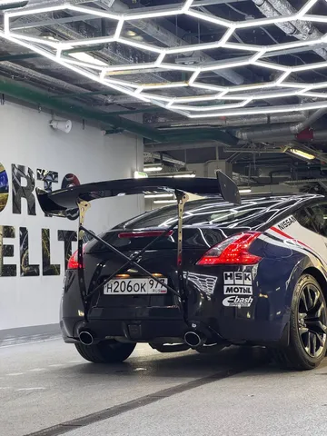
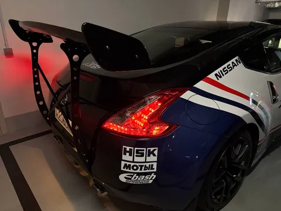
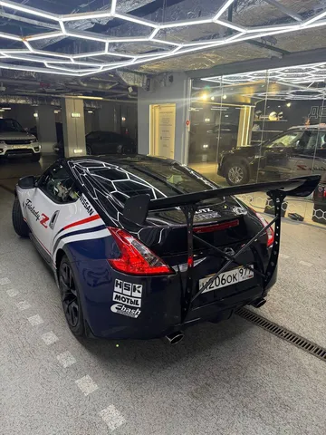

Когда я рассказывал про первый этап преображения зетки, я упоминал, что это еще не все. Многие говорили, что нужен спойлер. Я лишь загадочно улыбался, потому что работа уже велась. Разве что в сроках ошибся раза в 4. Но это нормально, потому что беспощадный кастом нетерпим к нетерпеливым.
Так вот. Ясное дело, спойлер нужен. Но если уж делать - то по хардкору. Банальный дактейл или типовое крыло на крышке багажника делать скучно. А я уже лет 10 засматриваюсь на концепцию chassis mounted spoiler (то есть когда крыло крепится к хвостовикам лонжеронов) в ожидании случая себе такое бахнуть.
Да вот незадача - готовых решений в доступе нет. Есть референс за океаном и несколько картинок "во, типа такого". Поэтому начинается кастом. Вообще сильно повезло, что ребята с детейлинга, которые мне делали e30 и ливрею для зетки, согласились за такое взяться. Притом в большей степени ради искусства.
Дальше - эскизы, проектирование, макетирование, сканирование, прототипирование, ЧПУ, изготовление, сборка, установка, подгонка - рассказывать этот путь можно долго, на то он и занял больше 2 месяцев. И он еще не закончен - хочу сделать версию 2.0 еще немного более лютой.


